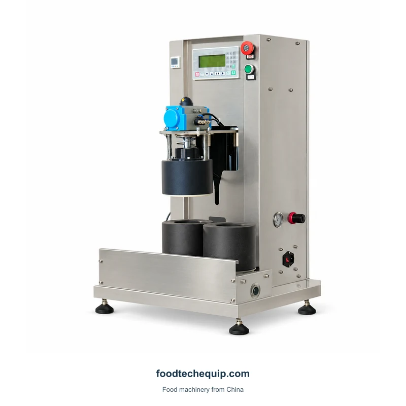

Gläser unter Vakuum verschließen
Vakuumverschließmaschine für Gläser mit Automatik- und Rundlaufvarianten
Vakuumverschließmaschine für Gläser mit Automatik-, Rundlauf- und Zweistationenausführungen.
Maschine ansehenVergleichen Sie Vakuumverschließmaschinen anhand der Passung zwischen Glasmündung und Deckel und prüfen Sie, wie die Gläser an den Stationen eingesetzt und entnommen werden. Die elektrischen Nenndaten der jeweiligen Ausführung stehen auf den Produktseiten.
Vakuumverschließmaschine für Gläser mit Automatik-, Rundlauf- und Zweistationenausführungen.
Maschine ansehen
Vakuumverschließmaschine für Gläser mit Aufnahmen für die Behälter und Bedienelementen an der Vorderseite.
Maschine ansehen
Vakuumverschließmaschine für Gläser mit 220 V und zwei oder vier Stationen. Die Nennleistung beträgt 0,5 kW bei zwei und 0,9 kW bei vier Stationen.
Maschine ansehen
Halbautomatische Vakuumverschließmaschine für Gläser mit Schrankunterbau und Verschließkopf.
Maschine ansehen
Halbautomatische Vakuumverschließmaschine für Gläser mit zwei oder vier Stationen.
Maschine ansehen
Vakuumverschließmaschine für Gläser mit zwei oder vier Stationen. Die Ausführung mit zwei Stationen hat 1,2 kW Nennleistung bei 220 V.
Maschine ansehen
Halbautomatische Vakuumverschließmaschine für Gläser mit vier Stationen.
Maschine ansehenVersuchen Sie es mit einem anderen Schlüsselwort oder löschen Sie Ihre Filter.
Stellen Sie passende Gläser und Deckel bereit. Geben Sie die Maße der Glasmündung und die Deckeleinlage oder Dichtung an. Diese Angaben bestimmen die Auslegung des Verschließvorgangs.
Beschreiben Sie die Zuführung, die gewünschte Stationsanordnung und das angestrebte Verschlussergebnis. Geben Sie an, wie Sie den fertigen Verschluss prüfen.
| Auswahlbereich | Vergleichskriterien | Was ist bereitzustellen? |
|---|---|---|
| Glasmündung | Glasmündung und passender Deckel | Passendes Paar aus Glas und Deckel |
| Stationsanordnung | Lade- und Entladesequenz | Ausgewählter Stationseintrag und Bedieneraufgabe |
| Abschlussergebnis | Prüfung des fertigen Verschlusses | Liner oder Dichtung und Bewertungsmethode |
Nennen Sie die Glasmündung und den passenden Deckel sowie das gewünschte Verschlussergebnis und die Zuführung. Vergleichen Sie Flaschenverschließmaschinen anhand der jeweils vorgesehenen Flasche und des passenden Verschlusses.